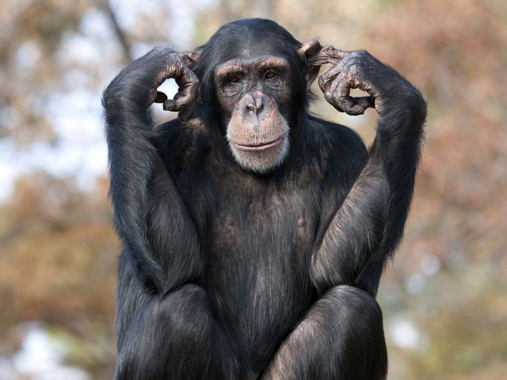

Chimpanzees are one of four types of “great ape.” The great apes are: chimpanzees, bonobos, gorillas, and orangutans. Wild chimpanzees only live in Africa. Humans and chimpanzees share 95 to 98 percent of the same DNA. Biologically, chimpanzees are more closely related to humans than they are to gorillas. Chimpanzees and other species, including some types of birds, make and use tools. For a long time, scientists thought human beings were the only ones who made tools.

Source: https://www.janegoodall.org.uk/chimpanzees/chimpanzee-central/15-chimpanzees/chimpanzee-central/21-chimp-facts